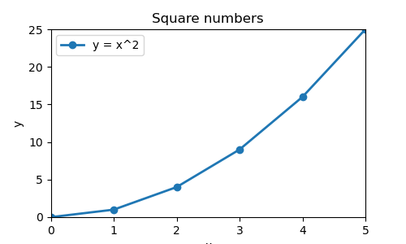
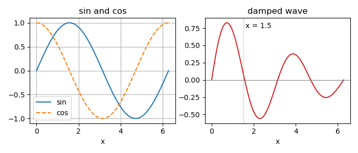
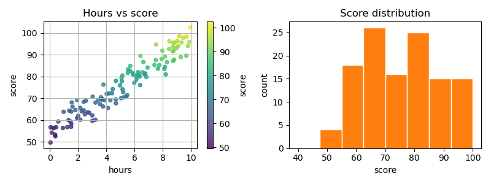
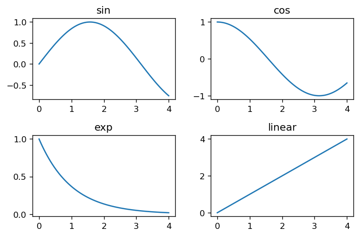
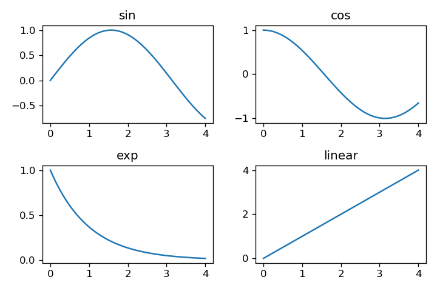

数据与图表
这一部分把第 4 部分的数组数据画成图表：先建立画布与坐标轴，画折线并 设置标题、范围与图例；再画多条曲线与并排子图；接着用散点图与直方图 观察关系与分布；最后控制尺寸、分辨率与保存边界，得到可复用的图片文件。
读本部分之前，需要先读 1.2（字符串与格式化）、 1.3（列表、元组与切片）、 4.1（ndarray 的创建与内存）、 4.2（索引、切片与视图）、 4.3（形状、广播与向量化）、 4.4（统计、排序与直方图）、 4.6（随机数与可复现）。
6.1画布、坐标轴与折线图
Matplotlib 是 Python 的绘图库，常用的入口是 matplotlib.pyplot。
一次绘图可以分成两层：画布（Figure）表示整张图，坐标轴（Axes）表示带
坐标范围、刻度与线条的绘图区。一个画布可以放一个或多个坐标轴；本部分的
折线图、散点图与直方图都画在坐标轴上。
课程中的脚本在终端运行，因此先选择无窗口后端，再导入 pyplot。
这样绘图结果直接写入文件，不需要桌面窗口，也不会等待人工关闭窗口。
画布与坐标轴
fig, ax = plt.subplots(figsize=(5, 3), dpi=100) 同时建立一张
画布和一个坐标轴。figsize 的单位是英寸，dpi 是
每英寸点数（dots per inch，DPI），两者相乘得到默认像素尺寸：5×100 与
3×100，即宽 500 像素、高 300 像素。省略 figsize 时使用默认
尺寸；省略 dpi 时使用默认分辨率。
matplotlib.use("Agg") 必须在导入 pyplot 之前调用。
Agg 是无窗口的渲染后端（backend），适合服务器、批处理与自动检查。若先
导入 pyplot，后端已经选定，再调用 use 可能没有
效果，甚至报错。
折线与数据
ax.plot(x, y) 按点的顺序画折线，x 与
y 的长度必须相同。两个参数都可以是列表或 NumPy 数组；
数组的逐元素运算可以直接生成纵坐标，例如 y = x ** 2。
折线图（line plot）适合表示随顺序变化的量，横轴通常是时间、序号或
另一个连续变量。
plot 返回一个列表，里面是 Line2D 对象。
只画一条线时写 line, = ax.plot(...)，把唯一元素解包出来，
后面可以用 line.get_xdata() 与 line.get_ydata()
读回数据。颜色、标记与线型通过 color、marker、
linestyle、linewidth 设置；颜色
"tab:blue" 来自默认色板 tab10，是其中的第一种
颜色。
标题、标签与图例
ax.set_title 设置坐标轴标题，set_xlabel 与
set_ylabel 设置两个坐标轴的标签。set_xlim 与
set_ylim 固定显示范围；不设置时，Matplotlib 按数据自动留出
边距。固定范围可以保证多张图使用同一尺度，便于比较。
在 plot 时给 label 赋值，再调用
ax.legend()，图例（legend）就会列出每条线的说明。没有
label 的线不会出现在图例里。图例位置默认自动选择，数据
密集时可以用 loc 指定角落。图中的文字使用英文，是为了避免
默认字体缺少中文字形时显示成方块。
保存与关闭
fig.savefig(path) 把画布写入文件，格式由扩展名决定：
.png 无损并支持透明通道，.jpg 有损。
savefig 默认使用画布建立时的 DPI，也可以在调用时用
dpi 覆盖。保存完成后调用 plt.close(fig) 释放
画布；循环里创建很多图而不关闭，会持续占用内存。
终端环境不使用 plt.show()。如果脚本同时需要显示与保存，
可以在保存之后再显示；自动运行的脚本只保存文件，避免等待窗口关闭。
题目：用 0 到 5 的整数及其平方画一条带圆点的折线，设置标题、坐标标签、显示范围与图例；打印画布尺寸、DPI、坐标轴数量、点数与图例文字，并把图保存成 PNG 文件。
输出图像：

y = x^2 上，右上角的点到达 (5, 25)，左上角图例只有
一条记录。
完整程序：
import matplotlib
matplotlib.use("Agg")
import matplotlib.pyplot as plt
import numpy as np
x = np.arange(6)
y = x ** 2
fig, ax = plt.subplots(figsize=(5, 3), dpi=100)
line, = ax.plot(x, y, color="tab:blue", marker="o", linewidth=2,
label="y = x^2")
ax.set_title("Square numbers")
ax.set_xlabel("x")
ax.set_ylabel("y")
ax.set_xlim(0, 5)
ax.set_ylim(0, 25)
ax.legend()
fig.savefig("out_plot_basic.png")
print("figure size:", fig.get_size_inches().tolist())
print("dpi:", int(fig.get_dpi()))
print("axes:", len(fig.axes))
print("line points:", len(line.get_xdata()))
print("legend:", [t.get_text() for t in ax.get_legend().get_texts()])
plt.close(fig)运行：
python3 示例代码/6.1-plot.pyfigure size: [5.0, 3.0] dpi: 100 axes: 1 line points: 6 legend: ['y = x^2']
画布尺寸是 5×3 英寸，DPI 为 100，因此默认像素尺寸为 500×300。
len(fig.axes) 为 1，说明这张画布上只有一个坐标轴；
line.get_xdata() 有 6 个点，对应 0 到 5 的整数。图例从
plot 的 label 取得文字，内容为
y = x^2。
横轴范围固定为 0 到 5，纵轴范围固定为 0 到 25，最后一个点 (5, 25) 正好落在右上角。保存后关闭画布，脚本结束时不留下打开的图形 对象。
写一个脚本 6-1.py，用 x = [1, 2, 3, 4] 与 y = [2, 4, 8, 16] 画一条红色虚线，线标签为 growth；画布大小为 4×2 英寸，DPI 为 80；把横轴范围设为 1 到 4，纵轴范围设为 0 到 16；调用图例并把图保存成 out_ex_6_1.png。打印画布尺寸、DPI、坐标轴数量、颜色与线型、横轴范围与图例文字。
size: [4.0, 2.0] dpi: 80 axes: 1 color/style: red -- xlim: (1.0, 4.0) legend: ['growth']
看答案
画布为 4×2 英寸、DPI 80，画一条红色虚线，标签为
growth。横轴范围固定为 1 到 4，纵轴范围固定为 0 到
16；设置范围后读回的下界与上界是 1.0 与 4.0。图例只有一条记录。
import matplotlib
matplotlib.use("Agg")
import matplotlib.pyplot as plt
fig, ax = plt.subplots(figsize=(4, 2), dpi=80)
line, = ax.plot([1, 2, 3, 4], [2, 4, 8, 16],
color="red", linestyle="--", label="growth")
ax.set_xlim(1.0, 4.0)
ax.set_ylim(0.0, 16.0)
ax.legend()
fig.savefig("out_ex_6_1.png")
print("size:", fig.get_size_inches().tolist())
print("dpi:", int(fig.get_dpi()))
print("axes:", len(fig.axes))
print("color/style:", line.get_color(), line.get_linestyle())
print("xlim:", ax.get_xlim())
print("legend:", [t.get_text() for t in ax.get_legend().get_texts()])
plt.close(fig)size: [4.0, 2.0] dpi: 80 axes: 1 color/style: red -- xlim: (1.0, 4.0) legend: ['growth']
写一个脚本 6-2.py，用 x = [1, 2, 3, 4] 在同一个坐标轴里画平方与立方两条曲线，标签分别为 square 与 cube；画布大小为 4×3 英寸，DPI 为 100；调用图例并把图保存成 out_ex_6_2.png。打印坐标轴数量、线条数量、图例文字，以及立方曲线读回的纵坐标。
axes: 1 lines: 2 labels: ['square', 'cube'] cube y: [1, 8, 27, 64]
看答案
平方与立方两条曲线画在同一个坐标轴上，图例按绘制顺序列出
square 与 cube。立方曲线读回的纵坐标是
[1, 8, 27, 64]，与输入数据一致。
import matplotlib
matplotlib.use("Agg")
import matplotlib.pyplot as plt
import numpy as np
x = np.array([1, 2, 3, 4])
fig, ax = plt.subplots(figsize=(4, 3), dpi=100)
ax.plot(x, x ** 2, label="square")
ax.plot(x, x ** 3, label="cube")
ax.legend()
fig.savefig("out_ex_6_2.png")
print("axes:", len(fig.axes))
print("lines:", len(ax.lines))
print("labels:", [t.get_text() for t in ax.get_legend().get_texts()])
print("cube y:", ax.lines[1].get_ydata().tolist())
plt.close(fig)axes: 1 lines: 2 labels: ['square', 'cube'] cube y: [1, 8, 27, 64]
你现在能写什么：建立画布与坐标轴，画一条折线，设置标题、坐标标签、显示范围与图例，并把图保存成图片文件。
6.2多条曲线、样式与子图
实际比较往往不止一条曲线。可以在同一个坐标轴上重复调用 plot，
用颜色与线型区分；也可以建立并排子图（subplot），让每个坐标轴独立设置
标题与范围。这一课先看样式与图例，再看子图布局，最后从图表对象读回
线条、标题与网格状态。
多条曲线与样式
同一个 ax 上每次 plot 都会新增一条线，线条按
调用顺序叠放。颜色可以用名称、十六进制字符串或色板名；线型用
"-" 实线、"--" 虚线、":" 点线；
标记用 "o" 圆点、"s" 方块等。线宽用
linewidth 设置，单位是点。
多条线使用同一横轴时，把 x 与每组 y 分别传给
plot。如果各条线的数据长度不同，分别调用即可，Matplotlib
不要求不同曲线共享同一个数组。为每条线设置 label，图例才能
区分它们；颜色与线型也应与标签一起考虑，避免只靠颜色传达信息。
图例、网格与参考线
ax.grid(True) 打开主网格，刻度线与网格线对齐，便于读数值。
ax.axhline(y) 画一条水平参考线，ax.axvline(x)
画一条垂直参考线；它们都返回 Line2D，并计入
ax.lines。ax.text(x, y, text) 在数据坐标的
指定位置写文字，常用于标注阈值或特殊点。
参考线使用数据坐标：水平线的位置是纵轴数值，垂直线的位置是横轴数值。
线条颜色与线宽要与数据线区分，通常选灰色、细线或点线。图例只收录带
label 的线；参考线如果没有标签，不会进入图例。
子图布局
fig, (left, right) = plt.subplots(1, 2, figsize=(7, 3)) 建立
一行两列的坐标轴，按从左到右的顺序解包。行列数可以换成
2, 2 等；行列数都大于 1 时，返回的 axes 是
二维数组，按 axes[行, 列] 访问。每个子图有自己的标题、
坐标范围与图例。
fig.tight_layout() 自动调整子图间距，减少标题与标签重叠。
它应在设置标题、标签之后、保存之前调用。子图很多时，间距仍可能不足，
可以配合 fig.subplots_adjust 手动留边；课程例子先使用
tight_layout，让默认布局保持整齐。
读回图表对象
画完图后可以从对象读回状态，用于检查程序是否按预期建立结构：
len(fig.axes) 是坐标轴数量，len(ax.lines) 是
该坐标轴的线条数量，ax.get_title() 返回标题，
ax.get_legend().get_texts() 返回图例文字列表。
ax.get_xgridlines()[0].get_visible() 返回横轴主网格是否可见。
这些读取操作不改变图形，适合在自动检查与调试中使用。注意参考线也会
增加 ax.lines 的长度：一个数据序列加一条水平线与一条垂直
参考线，合计三条线。读回数量时要按实际画过的对象计算，不能只统计
数据序列。
题目：在左子图画出正弦与余弦两条曲线，设置图例与网格；在右子图画出阻尼振荡，并加上一条水平参考线、一条垂直参考线与一段文字；打印坐标轴数量、两个子图的线条数量、左图图例与网格状态，并保存图像。
输出图像：

y = 0，垂直参考线在
x = 1.5，旁边的文字标出同一个位置。
完整程序：
import matplotlib
matplotlib.use("Agg")
import matplotlib.pyplot as plt
import numpy as np
x = np.linspace(0.0, 2.0 * np.pi, 101)
fig, (left, right) = plt.subplots(1, 2, figsize=(7, 3), dpi=100)
left.plot(x, np.sin(x), color="tab:blue", label="sin")
left.plot(x, np.cos(x), color="tab:orange", linestyle="--", label="cos")
left.set_title("sin and cos")
left.set_xlabel("x")
left.grid(True)
left.legend()
damped = np.exp(-x / 4.0) * np.sin(2.0 * x)
right.plot(x, damped, color="tab:red")
right.axhline(0.0, color="gray", linewidth=0.8)
right.axvline(1.5, color="gray", linestyle=":", linewidth=0.8)
right.text(1.6, 0.75, "x = 1.5")
right.set_title("damped wave")
right.set_xlabel("x")
fig.tight_layout()
fig.savefig("out_plot_curves.png")
print("axes:", len(fig.axes))
print("left lines:", len(left.lines))
print("right lines:", len(right.lines))
print("legend:", [t.get_text() for t in left.get_legend().get_texts()])
print("grid:", bool(left.get_xgridlines()[0].get_visible()))
plt.close(fig)运行：
python3 示例代码/6.2-curves.pyaxes: 2 left lines: 2 right lines: 3 legend: ['sin', 'cos'] grid: True
画布上有两个坐标轴，左图有两条数据曲线，右图有一条阻尼曲线、一条
水平参考线与一条垂直参考线，所以 right.lines 是 3。左图
图例按绘制顺序列出 sin 与 cos；网格已打开，
get_visible() 返回 True。
右图的水平参考线在 y = 0，垂直参考线在
x = 1.5，文字标在
(1.6, 0.75) 附近。右图没有调用 legend()，
两条参考线也没有标签，因此不会出现在任何图例中。
写一个脚本 6-3.py，在 0 到 π 之间取 50 个点，用一行两列的子图分别画正弦与余弦；左图标题为 Sine，右图标题为 Cosine，两个子图都调用图例；画布大小为 6×2.5 英寸，DPI 为 100；保存成 out_ex_6_3.png。打印坐标轴数量、两个标题、两个子图的线条数量与右图图例文字。
axes: 2 titles: Sine Cosine lines: 1 1 legend: ['cos']
看答案
一行两列的子图各有自己的标题与图例。左图标题为
Sine，右图为 Cosine，两个子图各有一条
曲线；右图图例文字是 cos。
import matplotlib
matplotlib.use("Agg")
import matplotlib.pyplot as plt
import numpy as np
x = np.linspace(0.0, np.pi, 50)
fig, (left, right) = plt.subplots(1, 2, figsize=(6, 2.5), dpi=100)
left.plot(x, np.sin(x), label="sin")
left.set_title("Sine")
left.legend()
right.plot(x, np.cos(x), label="cos")
right.set_title("Cosine")
right.legend()
fig.tight_layout()
fig.savefig("out_ex_6_3.png")
print("axes:", len(fig.axes))
print("titles:", left.get_title(), right.get_title())
print("lines:", len(left.lines), len(right.lines))
print("legend:", [t.get_text() for t in right.get_legend().get_texts()])
plt.close(fig)axes: 2 titles: Sine Cosine lines: 1 1 legend: ['cos']
写一个脚本 6-4.py，用 x = [0, 1, 2, 3] 在同一个坐标轴里画两条线：第一条纵坐标为 [0, 1, 4, 9]，实线、圆点标记、标签 square；第二条纵坐标为 [0, 1, 8, 27]，点线、方块标记、标签 cube。调用图例并保存成 out_ex_6_4.png。打印线条数量、两条线的线型、标记与图例文字。
lines: 2 styles: - : markers: o s legend: ['square', 'cube']
看答案
第一条线使用实线与圆点标记，第二条线使用点线与方块标记；图例按
标签列出 square 与 cube。读回的线型分别
是 - 与 :，标记分别是 o 与
s。
import matplotlib
matplotlib.use("Agg")
import matplotlib.pyplot as plt
x = [0, 1, 2, 3]
fig, ax = plt.subplots(figsize=(4, 2.5), dpi=100)
square, = ax.plot(x, [0, 1, 4, 9], linestyle="-", marker="o",
label="square")
cube, = ax.plot(x, [0, 1, 8, 27], linestyle=":", marker="s",
label="cube")
ax.legend()
fig.savefig("out_ex_6_4.png")
print("lines:", len(ax.lines))
print("styles:", square.get_linestyle(), cube.get_linestyle())
print("markers:", square.get_marker(), cube.get_marker())
print("legend:", [t.get_text() for t in ax.get_legend().get_texts()])
plt.close(fig)lines: 2 styles: - : markers: o s legend: ['square', 'cube']
你现在能写什么：在同一张图上画多条曲线，用颜色、线型与标记区分数据，添加网格、参考线与图例，并把内容分到多个子图中。
6.3散点图与直方图
折线图强调顺序，散点图（scatter plot）强调两个变量的对应关系， 直方图（histogram）强调一个变量的分布。这一课用固定随机种子生成 一组学习时长与分数，先画散点，再画直方图，最后检查分箱范围与计数。
散点图
ax.scatter(x, y) 为每组数据画一个点，x 与
y 长度相同。点的大小由 s 设置，颜色由
c 设置；c 可以是一组数值，配合
cmap 把数值映射成颜色。alpha 设置透明度，
点密集时能看出重叠程度。
fig.colorbar(points, ax=left) 为散点添加颜色条，说明数值与
颜色的对应关系。颜色条会占用画布上的一块区域，因此
len(fig.axes) 可能大于数据子图的数量。散点对象存放在
ax.collections 里，通常一组散点占一个集合。
直方图
counts, edges, patches = ax.hist(values, bins=8, range=(40, 100))
把数据分成 8 个等宽区间。返回值里 counts 是每个区间的计数，
edges 是区间边界，长度比计数多 1；patches 是
画出的矩形。区间左闭右开，最后一个区间包含右端点。
range 之外的数据不进入任何区间，也不计入计数总和。因此
counts.sum() 可能小于输入数据的总数，差值是落在范围外的
样本数。画图前先检查数据的实际最小与最大值，避免用错范围而漏掉样本。
分布与分箱
散点图看趋势与离群点，直方图看集中位置与分散程度。分箱数量影响形状： 区间太少会掩盖细节，太多会让每个区间只剩少量样本、图形起伏明显。 常见做法是先按数据范围与样本量选一个适中数量，再观察形状是否稳定。
ax.hist 默认画计数；设置 density=True 后纵轴变成
概率密度，所有矩形面积之和为 1，适合比较样本量不同的两组数据。例子
使用计数，因为可以直接看到每个区间有多少个样本。
可复现的随机数据
rng = np.random.default_rng(7) 建立带种子的随机数生成器，
之后每次调用 rng.uniform 或 rng.normal 都按顺序
从该生成器的序列中取值。固定种子后，同一环境下重复运行得到相同的数组，
图表与打印结果才能逐字核对。
rng.uniform(low, high, size) 生成区间内均匀分布的数，
rng.normal(mean, std, size) 生成正态分布的数。例子把学习
时长设为 0 到 10 的均匀分布，把分数设为随时长上升的线性关系再加一点
正态扰动，因此散点图呈现上升趋势，直方图的大部分样本集中在 55 到 100
分之间。
题目：用种子 7 生成 120 名样本的学习时长与分数，左子图画带颜色映射的散点图并添加颜色条，右子图画出分数在 40 到 100 之间的 8 个区间直方图；打印点数、集合数量、各区间计数、区间边界与计数总和。
输出图像：

完整程序：
import matplotlib
matplotlib.use("Agg")
import matplotlib.pyplot as plt
import numpy as np
rng = np.random.default_rng(7)
hours = rng.uniform(0.0, 10.0, 120)
scores = 55.0 + 4.2 * hours + rng.normal(0.0, 4.0, 120)
fig, (left, right) = plt.subplots(1, 2, figsize=(8, 3), dpi=100)
points = left.scatter(hours, scores, s=18, c=scores, cmap="viridis",
alpha=0.8)
left.set_title("Hours vs score")
left.set_xlabel("hours")
left.set_ylabel("score")
left.grid(True)
fig.colorbar(points, ax=left, label="score")
counts, edges, _ = right.hist(scores, bins=8, range=(40.0, 100.0),
color="tab:orange", edgecolor="white")
right.set_title("Score distribution")
right.set_xlabel("score")
right.set_ylabel("count")
fig.tight_layout()
fig.savefig("out_plot_scatter.png")
print("points:", len(hours))
print("collections:", len(left.collections))
print("counts:", counts.astype(int).tolist())
print("edges:", np.round(edges, 1).tolist())
print("bins total:", int(counts.sum()))
plt.close(fig)运行：
python3 示例代码/6.3-scatter.pypoints: 120 collections: 1 counts: [0, 4, 18, 26, 16, 25, 15, 15] edges: [40.0, 47.5, 55.0, 62.5, 70.0, 77.5, 85.0, 92.5, 100.0] bins total: 119
左图的散点是一个集合，所以 collections 为 1；颜色映射
使用分数本身，分数越高颜色越靠后。右图把 40 到 100 分成 8 个等宽区间，
每个区间宽度为 7.5；计数依次为 0、4、18、26、16、25、15、15，总和为
119。
输入有 120 个分数，但计数总和是 119，说明有一个分数高于 100，落在
range 之外，没有进入任何区间。直方图只统计给定范围内的
样本；需要覆盖全部数据时，应把上界扩大到实际最大值以上，或先检查
数据的范围。
写一个脚本 6-5.py，用种子 3 生成 80 个横坐标（0 到 5 的均匀分布）与对应的纵坐标（斜率为 2、截距为 0，叠加标准差为 1 的正态扰动）；画散点图，点大小为 20，颜色为 tab:green；设置标题与两个坐标标签，保存成 out_ex_6_5.png。打印点数、集合数量与横坐标的最小值、最大值（保留两位小数）。
points: 80 collections: 1 x range: 0.01 4.87
看答案
固定种子 3 生成 80 个点，散点对象占一个集合。横坐标在 0 到 5 之间， 读回的最小值为 0.01、最大值为 4.87，保留两位小数。
import matplotlib
matplotlib.use("Agg")
import matplotlib.pyplot as plt
import numpy as np
rng = np.random.default_rng(3)
x = rng.uniform(0.0, 5.0, 80)
y = 2.0 * x + rng.normal(0.0, 1.0, 80)
fig, ax = plt.subplots(figsize=(4, 3), dpi=100)
ax.scatter(x, y, s=20, color="tab:green")
ax.set_title("Generated points")
ax.set_xlabel("x")
ax.set_ylabel("y")
fig.savefig("out_ex_6_5.png")
print("points:", len(x))
print("collections:", len(ax.collections))
print("x range:", round(float(x.min()), 2), round(float(x.max()), 2))
plt.close(fig)points: 80 collections: 1 x range: 0.01 4.87
写一个脚本 6-6.py，用分数 [52, 61, 64, 68, 72, 75, 79, 83, 88, 95] 画直方图，分成 5 个区间，范围为 50 到 100；设置标题与两个坐标标签，保存成 out_ex_6_6.png。打印各区间计数、区间边界与计数总和。
counts: [1, 3, 3, 2, 1] edges: [50.0, 60.0, 70.0, 80.0, 90.0, 100.0] total: 10
看答案
十个分数分成 5 个等宽区间，边界从 50 到 100，步长为 10。计数依次 为 1、3、3、2、1，总和为 10，所有分数都在给定范围内。
import matplotlib
matplotlib.use("Agg")
import matplotlib.pyplot as plt
import numpy as np
scores = np.array([52, 61, 64, 68, 72, 75, 79, 83, 88, 95])
fig, ax = plt.subplots(figsize=(4, 3), dpi=100)
counts, edges, _ = ax.hist(scores, bins=5, range=(50, 100),
color="tab:purple", edgecolor="white")
ax.set_title("Score histogram")
ax.set_xlabel("score")
ax.set_ylabel("count")
fig.savefig("out_ex_6_6.png")
print("counts:", counts.astype(int).tolist())
print("edges:", edges.tolist())
print("total:", int(counts.sum()))
plt.close(fig)counts: [1, 3, 3, 2, 1] edges: [50.0, 60.0, 70.0, 80.0, 90.0, 100.0] total: 10
你现在能写什么：用散点图观察两个变量的关系，用直方图观察分布，读回分箱计数与边界，并用固定随机种子生成可复现的数据。
6.4尺寸、分辨率与保存
图表最终要进入报告、网页或论文，文件尺寸与清晰度需要提前控制。这一课 说明英寸、DPI 与像素的关系，比较固定边界与紧凑边界保存的差异，检查 背景颜色与 PNG 通道，最后保存一张包含四个子图的报告图。
英寸与像素
画布的物理尺寸用英寸表示，figsize=(6, 4) 表示宽 6 英寸、
高 4 英寸。dpi 是每英寸点数，像素数等于英寸数乘以 DPI：
6×120 与 4×120 得到宽 720、高 480。屏幕显示时 DPI 影响观感，保存文件时
savefig(dpi=...) 决定输出像素，可以与画布建立时的 DPI
不同。
提高 DPI 会增加像素数，也会增加文件大小与绘制时间，但不会改变线条的 数据位置与画布比例。需要打印的图通常用 150 到 300 DPI；网页预览用 72 到 120 DPI 已经足够。先确定用途，再选择尺寸与 DPI，避免最后再缩放 位图。
紧凑边界
fig.savefig(path, bbox_inches="tight") 把画布裁剪到实际内容
的边界，去掉标题、标签之外的空白。裁剪后的像素尺寸不再严格等于
figsize × dpi，通常会小一些；默认还会在外围保留 0.1 英寸
的边距，可以用 pad_inches 调整。
紧凑边界适合单张报告图与网页插图，因为内容占满画面、空白较少。若多张 图需要严格对齐，固定边界更容易控制像素尺寸；两种方式各有用途，保存后 读回图像数组可以确认实际尺寸。
背景与格式
facecolor 设置画布背景，保存时也可以单独指定；
transparent=True 让背景透明，但只有支持透明通道的格式能
保留。PNG 可以保存 RGBA 四通道，JPEG 不支持透明通道，透明区域会被填成
白色或黑色。
matplotlib.image.imread(path) 把图片读成浮点数组，数值范围
是 0 到 1，形状是 (高, 宽, 通道数)。PNG 常见四通道：
红、绿、蓝与透明度。读回数组可以检查尺寸、通道与最大值，适合自动核对
保存结果。
多子图保存
plt.subplots(2, 2, figsize=(6, 4)) 建立 2×2 的坐标轴数组，
按行列索引访问。先给每个子图设置标题与数据，再调用
fig.tight_layout() 调整间距，最后保存整张画布。子图标题、
坐标标签与图例都属于画布内容，保存时会一起写入。
同一张画布可以保存多次：例如先保存紧凑版本，再保存固定边界版本，
比较两者的像素尺寸。每次 savefig 使用调用时给出的参数，
不会改动画布本身；全部保存完成后关闭画布。
题目：建立 2×2 共四个子图，分别画正弦、余弦、指数衰减与直线；先以 120 DPI、紧凑边界保存一张，再以 120 DPI、固定边界保存一张；读回两张图，打印坐标轴数量、画布英寸尺寸、两种像素形状、数组类型与最大值。
输出图像：


完整程序：
import matplotlib
matplotlib.use("Agg")
import matplotlib.pyplot as plt
import numpy as np
from matplotlib import image as mpimg
x = np.linspace(0.0, 4.0, 121)
fig, axes = plt.subplots(2, 2, figsize=(6, 4), dpi=100)
axes[0, 0].plot(x, np.sin(x))
axes[0, 0].set_title("sin")
axes[0, 1].plot(x, np.cos(x))
axes[0, 1].set_title("cos")
axes[1, 0].plot(x, np.exp(-x))
axes[1, 0].set_title("exp")
axes[1, 1].plot(x, x)
axes[1, 1].set_title("linear")
fig.tight_layout()
fig.savefig("out_plot_report.png", dpi=120, bbox_inches="tight",
facecolor="white")
fig.savefig("out_plot_report_plain.png", dpi=120, facecolor="white")
tight = mpimg.imread("out_plot_report.png")
plain = mpimg.imread("out_plot_report_plain.png")
print("axes:", len(fig.axes))
print("size inches:", fig.get_size_inches().tolist())
print("tight pixels:", tight.shape)
print("plain pixels:", plain.shape)
print("dtype:", tight.dtype)
print("max value:", float(tight.max()))
plt.close(fig)运行：
python3 示例代码/6.4-saveplot.pyaxes: 4 size inches: [6.0, 4.0] tight pixels: (466, 707, 4) plain pixels: (480, 720, 4) dtype: float32 max value: 1.0
画布为 6×4 英寸，包含四个坐标轴。固定边界版本按 120 DPI 保存，
宽 720、高 480，正好等于 6×120 与 4×120；紧凑边界版本裁掉多余空白，
变成宽 707、高 466。两张 PNG 都读成四通道浮点数组，类型为
float32，最大值是 1.0，说明数值已经归一化到 0 到 1。
紧凑边界的高度与宽度都比固定边界小，说明裁剪确实去掉了空白。
fig.get_size_inches() 仍返回建立时的 6×4，保存参数不会
改动画布的英寸尺寸；像素变化只发生在输出文件里。
写一个脚本 6-7.py，画一条 0 到 1 之间的平方曲线，画布为 4×2 英寸、建立时 DPI 为 100；分别以 DPI 72 与 DPI 144 保存成 out_ex_6_7_72.png 与 out_ex_6_7_144.png；读回两张图，打印像素形状，并打印高分辨率图的宽高是否正好是低分辨率图的两倍。
72: (144, 288, 4) 144: (288, 576, 4) double: True
看答案
同一张 4×2 英寸的图按 72 与 144 DPI 保存，像素形状分别是
(144, 288, 4) 与 (288, 576, 4)。高分辨率
图的宽与高都正好是低分辨率图的两倍，所以判断为
True。
import matplotlib
matplotlib.use("Agg")
import matplotlib.pyplot as plt
import numpy as np
from matplotlib import image as mpimg
x = np.linspace(0.0, 1.0, 40)
fig, ax = plt.subplots(figsize=(4, 2), dpi=100)
ax.plot(x, x ** 2)
fig.savefig("out_ex_6_7_72.png", dpi=72)
fig.savefig("out_ex_6_7_144.png", dpi=144)
small = mpimg.imread("out_ex_6_7_72.png")
large = mpimg.imread("out_ex_6_7_144.png")
print("72:", small.shape)
print("144:", large.shape)
print("double:", large.shape[:2] == tuple(2 * n for n in small.shape[:2]))
plt.close(fig)72: (144, 288, 4) 144: (288, 576, 4) double: True
写一个脚本 6-8.py，建立一行两列的子图，画布为 5×2 英寸、DPI 为 110；左图画平方，标题为 square，右图画立方，标题为 cube；用紧凑边界与浅灰背景 #f0f0f0 保存成 out_ex_6_8.png；读回图像，打印坐标轴数量、像素形状、数组类型与画布英寸尺寸。
axes: 2 shape: (209, 540, 4) dtype: float32 size inches: [5.0, 2.0]
看答案
两个子图用紧凑边界与浅灰背景保存，读回的 PNG 形状是
(209, 540, 4)，类型为 float32。画布的英寸
尺寸仍是建立时的 5×2；紧凑边界只改变输出文件的像素，不改变画布
记录。
import matplotlib
matplotlib.use("Agg")
import matplotlib.pyplot as plt
import numpy as np
from matplotlib import image as mpimg
fig, axes = plt.subplots(1, 2, figsize=(5, 2), dpi=110)
axes[0].plot([0, 1, 2], [0, 1, 4])
axes[0].set_title("square")
axes[1].plot([0, 1, 2], [0, 1, 8])
axes[1].set_title("cube")
fig.tight_layout()
fig.savefig("out_ex_6_8.png", bbox_inches="tight", facecolor="#f0f0f0")
pixels = mpimg.imread("out_ex_6_8.png")
print("axes:", len(fig.axes))
print("shape:", pixels.shape)
print("dtype:", pixels.dtype)
print("size inches:", fig.get_size_inches().tolist())
plt.close(fig)axes: 2 shape: (209, 540, 4) dtype: float32 size inches: [5.0, 2.0]
你现在能写什么：按英寸与 DPI 控制图片尺寸，用紧凑边界裁剪空白，选择背景与文件格式，保存包含多个子图的完整报告图，并读回图像检查结果。